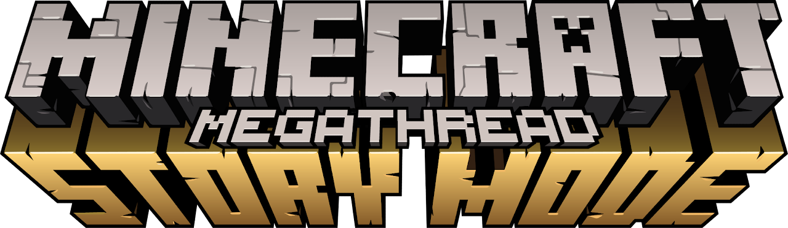

The Minecraft: Story Mode Megathread was our first big archival and website project founded by Pixel and DroidTA. The website was made to educate newbies on how to obtain MCSM now that you can't buy it through official means anymore, but it has also brought about some lost media recovery, such as the thought missing IOS episode files, Microsoft Store version, MacOS episode files and more.